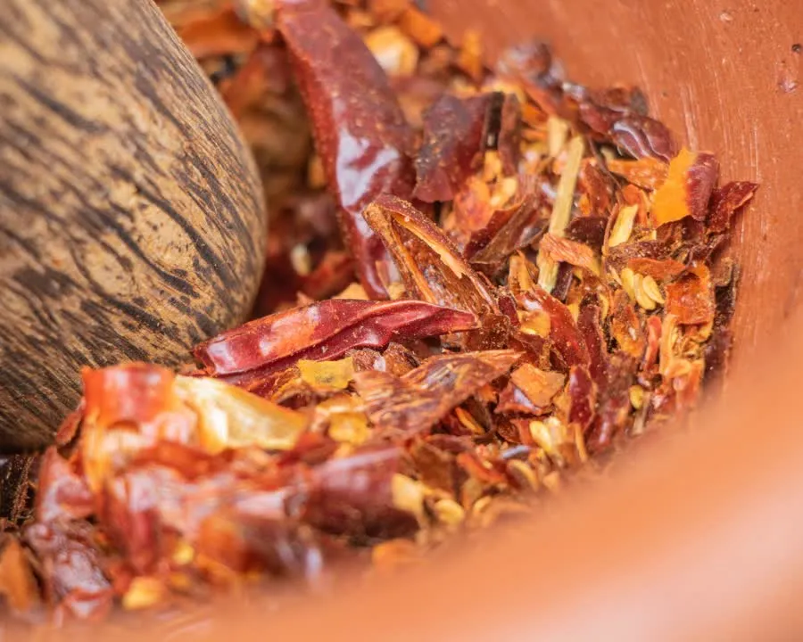
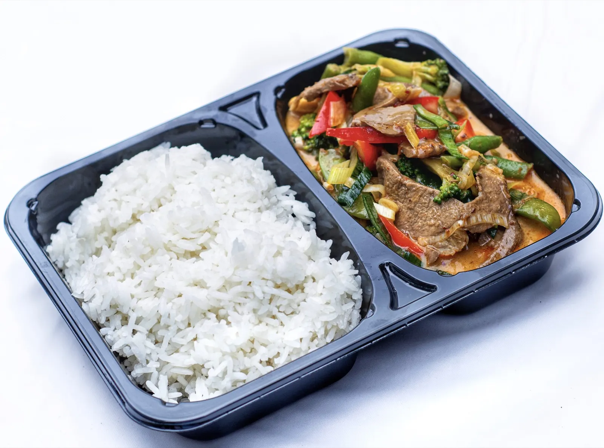
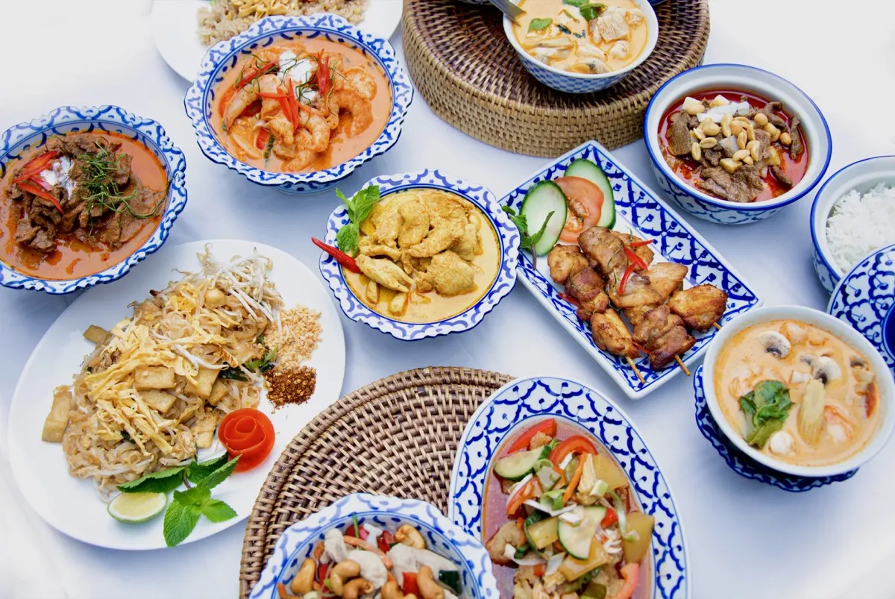

Elke dag opnieuw gesneden
Groenten, kruiden en pepers gaan vers de keuken in. Wat er ’s middags ligt, staat ’s avonds in je bakje.
Ons verhaal
Sinds 1992 staat dezelfde Thaise keuken aan de Muntelstraat. Eerst met tafels, nu als de plek waar je echt Thais eten meeneemt naar huis.


Lai Thai opende in 1992 als Thais restaurant, misschien wel het eerste van Den Bosch. Bijna een kwart eeuw lang werd hier aan tafel gegeten. Eind 2015 sloten de tafels en ging de zaak verder zoals de meeste gasten hem toch al gebruikten: als de toko waar je je eten meeneemt.
De naam bleef, het porselein bleef en de keuken bleef. ลายไทย, lai Thai, betekent Thais patroon. Je vindt het terug in het blauw-witte servies waarin elke curry wordt geschept, en in recepten die al meer dan dertig jaar niet zijn veranderd.
Afhaal betekent hier niet: opwarmen wat klaarstond. Dit is wat er gebeurt nadat jij besteld hebt.
Groenten, kruiden en pepers gaan vers de keuken in. Wat er ’s middags ligt, staat ’s avonds in je bakje.

Massaman, Phanaeng, groen en rood: elke curry heeft zijn eigen basis en zijn eigen pittigheid.

Geen bak die staat te wachten. Daarom kies je zelf je tijd, en daarom smaakt het thuis nog zoals in de zaak.

Muntelstraat 12, tegenover de watertoren. Klaar op de tijd die jij online kiest.

Wij bezorgen zelf in Den Bosch, vanaf € 35,00 aan gerechten plus € 4,00 bezorgkosten.

Er staan een paar tafeltjes in de zaak. Binnenlopen mag gewoon, reserveren hoeft nooit.

Een verjaardag, een borrel of een lunch op het werk? Vraag het ons, we denken graag mee.
Veel Thais gegeten, maar hier proef ik toch het meest de authentieke smaak van Thailand terug. Aardige mensen, zeker voor herhaling vatbaar.
Authentieke Thai. Ik heb het eten er afgehaald: erg lekker en prima porties.
Erg goede afhaal, er werken aardige mensen en het is prima geprijsd voor wat je krijgt.
Mijn favoriete Thais restaurant in Den Bosch. Veel keuze, gerechten zijn goed op smaak en de service is geweldig.
Echt veruit de beste Thai van Den Bosch, en dan ook nog eens een van de goedkoopste. Het eten is altijd vers.
Muntelstraat 12, tegenover de watertoren. Di t/m zo van 16.00 tot 20.00 uur.